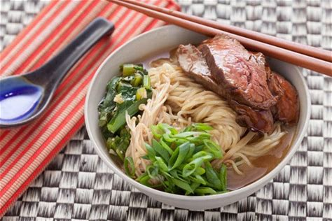

third recipe: Beef Ramen

Get set for prepping this popular classic in an easy-to-follow recipe for success. What's not to love?
Tantalising beef packed with authentic flavours, slurpy noodles and a photo-worthy finish…
Ingredients :
- 1 tbsp vegetable oil
- 2 garlic cloves, crushed
- 1 tbsp toasted sesame seeds
- 2 green onions, thinly sliced diagonally
- 4 eggs
- 400g eye fillet steak
- 2 tsp vegetable oil
- 270g ramen noodles
- 1 bunch broccolini, trimmed, halved lengthways 200g Swiss brown mushrooms, halved
- 1 cob of corn, husks and silk removed
- 2 tbsp rice wine vinegar
- 2 tbsp salt-reduced soy
- 1L (4 cups) chicken stock
- 1 long red chilli, deseeded, finely chopped, plus extra, sliced, to serve
- 2cm piece ginger, peeled, grated
Directions:
- Heat oil in a large deep saucepan over medium heat. Add garlic, ginger and chilli. Cook for 2 minutes or until aromatic. Add chicken stock, soy sauce, rice wine vinegar and 3 cups of water and bring to the boil.
- Add corn and broccolini to stock. Cook broccolini for 2 minutes and corn for 5 minutes or until tender. Remove corn and place on a chopping board. Transfer broccolini to a bowl. Add mushrooms to stock and cook for 3 minutes. Remove with a slotted spoon to bowl with broccolini. Add noodles to stock and cook for 4 minutes. Cut kernels from corn.
- Meanwhile, heat a frying pan over a medium high heat. Rub oil over steak and season. Cook for 3-4 minutes each side for medium-rare. Transfer to a plate and stand for 10 minutes. Thinly slice.
- Bring a medium saucepan of water to the boil. Reduce heat to low, and when bubbles subside, use a spoon to stir the water until a whirlpool forms. Break an egg into a small bowl and gently slide into whirlpool. Cook for 3 minutes or until white is cooked. Use a slotted spoon to transfer egg to a plate. Repeat with remaining eggs.
- Place noodles and stock into serving bowls. Top with broccolini, corn, mushrooms, beef and an egg. Sprinkle with onions, sesame seeds and chilli. Serve.
and now lets move to the next recipe ^-^
Shrimp ramen